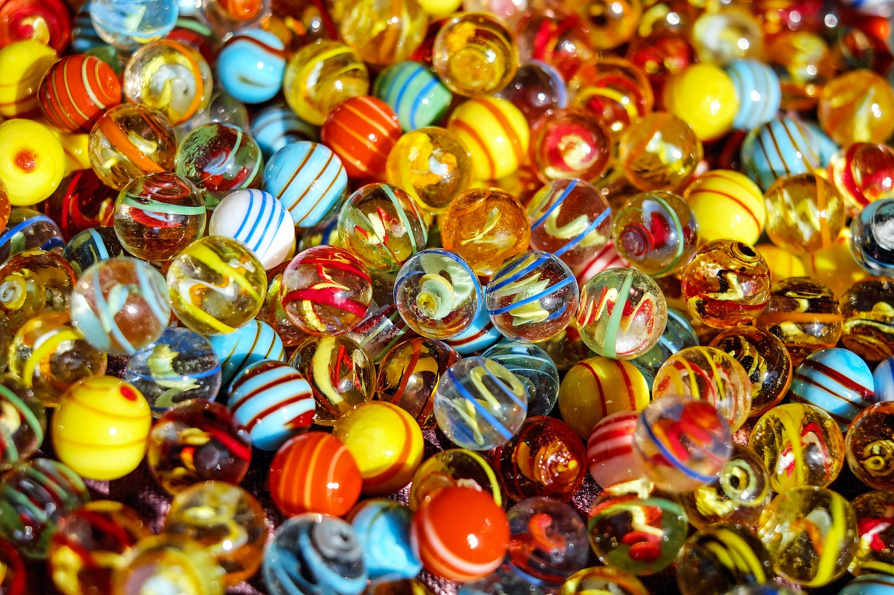

What You Should Know - Geometric Shapes: Time Your Spinning Top
 Important Vocabulary
Important Vocabulary
- Bar Graph - a type of data display that compares data using bars to show different categories
- Scale - the numbers on a bar graph that represents the units used
- Interval - the space or distance between each of the numbers on a scale
- Stopwatch - a time keeping device that records small units of time
- Friction - the force created by one surface rubbing against another
Conservation of Angular Momentum
What keeps your bicycle from falling over? It is the same thing that keeps a spinning top upright.
Physics tells us that an object in motion tends to stay in motion.
The same idea applies to spinning objects, like a top. When a top is spinning in a circle, it wants to keep turning in the same circle until some other force changes its spinning motion.

In fact, the faster the object spins, the harder it is for any "wobbling" forces to tip it over. Scientists call this conservation of angular momentum.
This law of physics is also what helps keep your bicycle from falling over. You may have even noticed that the faster your wheels spin, the easier it is to stay upright. The faster an object moves, the more difficult it is to change its motion.

Why Does Friction Matter?
No matter what, at least one outside force will act against the spinning top’s motion.
Friction is the resisting force created by one surface rubbing against another. Since a top spins on a tiny point, there is not a lot of friction with the surface it is spinning on. This means a good top will spin for a long time. Nevertheless, there is always some friction, so the top will eventually be slowed down to the point where gravity will be able to tip it over.

If the tip of the spinning top rubs against the table, friction acts against it. There is even a little bit of friction from the outside of the top rubbing against the air. This is called drag.
As the top is slowed down by these forces, it becomes easier for the force of gravity to make it wobble and eventually fall over.

 How Can Data Be Collected and Organized?
How Can Data Be Collected and Organized?
Data collection begins with a question that someone wants to answer. Some sample questions are:
- Which top will spin for the longest amount of time?
- How many push ups can students complete in one minute?
- What type of popcorn do my friends prefer?
Once a question is asked, the next step is to collect the data that will help to answer the question. To collect data, one could create a questionnaire, have a discussion, conduct an interview, or make observations. For example, you could interview your friends to find out their favorite popcorn flavor.
After the data is collected, the next steps are to organize and display the data. For example, when your friends give you the answer, you can make a t-chart with the flavor and the number of students who prefer each flavor. To make the data easier to understand, you can make a graph. A graph is a visual way to display data. The type of graph and choice depends on the data collected. A bar graph is an appropriate way to display the popcorn data. Bar graphs tell how much or how many. See the image below.

The final step in the data collection process is to analyze the data. Analyzing data means to think about and communicate what you learned from the data. Did the data help you to answer the question that you began with? When the data from the bar graph is analyzed, there are many things that can be stated about the preferred popcorn flavor of this group of friends. For example, eight friends prefer buttered popcorn and five friends prefer caramel popcorn. The data shows that three more friends prefer butter over caramel popcorn.

 What is a Bar Graph?
What is a Bar Graph?
A bar graph is a type of data display that compares data using bars to show different categories. The parts of a bar graph are the title, scale, interval, bars, and labels. Watch these videos to learn more about bar graphs:
-
In the first video Inventing Bar Graphs, the Cyberchase Squad makes a bar graph.
-
In the second video Attention to Scale, the Cyberchase Squad helps us to understand scale.
- In the final video The Power of the Whole Picture, the Cyberchase Squad helps us to understand intervals and the importance of an appropriate scale.
 Career Connection and Real-World Application
Career Connection and Real-World Application
Toy Maker
Toy makers imagine and create toys for people of all ages. Many toys that toy makers create—like spinning tops—involve applying knowledge of math, science, and technology.
Before a toy is sold in stores, toy makers will test out the toy, collect data on the toy, and analyze the data that was collected. They will even have children play with the toys to get their feedback. This process helps them know if other children will like the toy and if it will sell. Toy makers may have to redesign the toy many times to make sure that it is a success.
Physicist
A physicist is a type of scientist that studies, researches, and explores findings about how the natural world works. Physicists use mathematical equations to help prove their ideas about the natural world. The natural world includes concepts like gravity, motion, forces, and friction. Once physicists prove their ideas, the ideas are applied to create many things that we use everyday like airplanes and even toys like spinning tops.